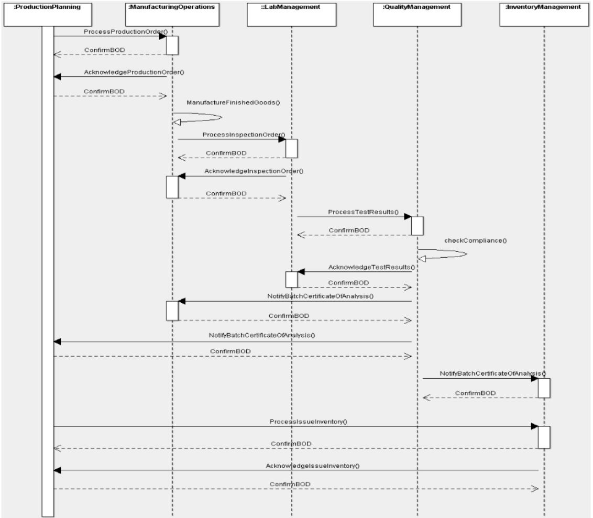

Scenario 67 - Inspect and Disposition Finished Goods Lot67.0 OverviewScenario #67 describes the integration of business software involved with the process of inspecting finished goods after the completion of the manufacturing process, and subsequent lot disposition whether that is the release into inventory, placing product on hold, reclassification, or potential scrap.Inspect and Disposition Finished Goods Lot process leverages the InspectionOrder and the TestResults from the laboratory, and Batch/ItemCertificateOfAnalysis to produce the report for Customers. The purpose of this scenario is to enable the visualization of the participants in the process and the dialogs between them for this specific integration. This scenario is not meant to be the only model for integrating customers applications to a lab information management applications. This is simply one model that may be used to guide one's own integration efforts. Many applications contribute to the generation of lab requests and the resulting lab results. Some components involved with the distribution of lab requests and results are:
67.1 Scenario DiagramThe scenario below contains the participants involved in the interaction, the dialog flows or conversation between them, certain assumptions about the sequence of events, and assumptions about the technical approach, for example, publish and subscribe.This is a model to be used as a design recommendation, not a required approach..  67.2 AssumptionsThis scenario assumes a loosely coupled, asynchronous approach with transaction management required but not explicitly defined.This scenario describes a model for one or more manufacturing components integrating with another quality, inventory, production plan and lab management components. The environment for this integration is typically within a single external organization but may involve external organizations such as the testing lab or inventory management. There may be instances where all of the data is contained in the documents and other instances where additional binary information accompanies the InspectionOrder and ProcessTestResults, most commonly images or geographic files. This scenario assumes that the product lifecycle management component owns the TestSpecification description and the instances of data within it. TestSpecifications are versioned, and this scenario illustrates pushing revisions to users. However, it does not specify how information about prior versions are managed, maintained, or recovered. This scenario does not cover the activity between the receipt of the Customer purchase order or shipment of the product to the Customer. Similarly, this scenario does not cover the activity managing non-conforming lots as previously noted. Both activities are assumed to be supported by normal activity of a vendor's application. The diagram and descriptions of the business process for this scenario focus on how a successful execution of the business process should take place. There may be several places in this business process where errors can occur and corrective actions must be instituted. Since such actions are implementation dependent, detailed descriptions of the errors that might occur and the corrective actions that might be taken in response will not be provided for this scenario, although general information about errors that might happen and how they might be dealt with may be provided. 67.3 Participant DefinitionsThis scenario contains two major components: business operations and manufacturing operations. Business Operations participants are Inventory Management, Quality Management, Production Planning. Manufacturing operations also includes the Lab Management.The definitions and details of these applications are left to the designer but are assumed to contain the functionality as defined by what is commonly sold in the commercial marketplace today. This definition is broadly accepted by the scenario designers and is a direct result of the decision not to define how the processing takes place within any individual application. Typical capabilities of these participants are described:
The most important factors in defining these participants is to ensure that an integration designer can communicate the requirements precisely enough to specify and design the integration processes needed and their interrelationships. The most important factors in defining these participants is to ensure that an integration designer can communicate the requirements precisely enough to detail the interfaces needed and their interrelationships. Note that the evolution of eCommerce has yielded independent trading exchanges and other intermediaries between business operations and inventory management providers. Requirements and operations for intermediaries should be similar to direct links between the two components 67.4 Business Workflow (Sequence)The business workflow is graphically represented by starting at the Scenario top and reading from top down and from left to right. The arrows in a sequence diagrams shows the message exchanged, and the response to the message. A ConfirmBOD provides an acknowledge to the initial request that the original request was received and understood as a valid. The Acknowledge(noun) message indicates that the transaction was processed (committed), and a business person has reviewed and provided information related to the next step (accepted, rejected, etc.).The exchange of OAGIS BODs such as the InspectionOrder and TestResults may follow several different workflows, depending on if it fits within discrete manufacturing (e.g., electronics) or process manufacturing (e.g., animal or human food). The process depends on the type of product or products involved and the entities exchanging the documents. The sequence diagram illustrates the data exchanges involved within the business process.
The alternate sequence would be around non-conforming items that did not meet the referenced specification:
67.5 Exception HandlingException handling is highly localized as the result of how business capabilities are implemented including the deployed infrastructure, management and business rules. As such, this section of the Scenario documentation is planned to be used as a guide to help understand the additional intent of these Scenarios. If no exceptions are noted here, then it can be assumed that the Scenario designers agreed that the Scenario is straightforward and has no additional needs:
Copyright OAGi 2017 - All Rights Reserved -- OAGIS release 10.4 - Document Number: 20170501-67 |